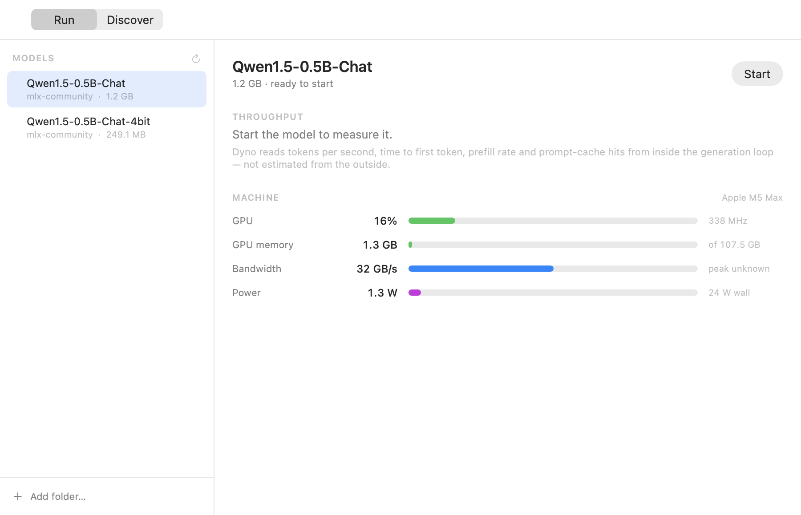
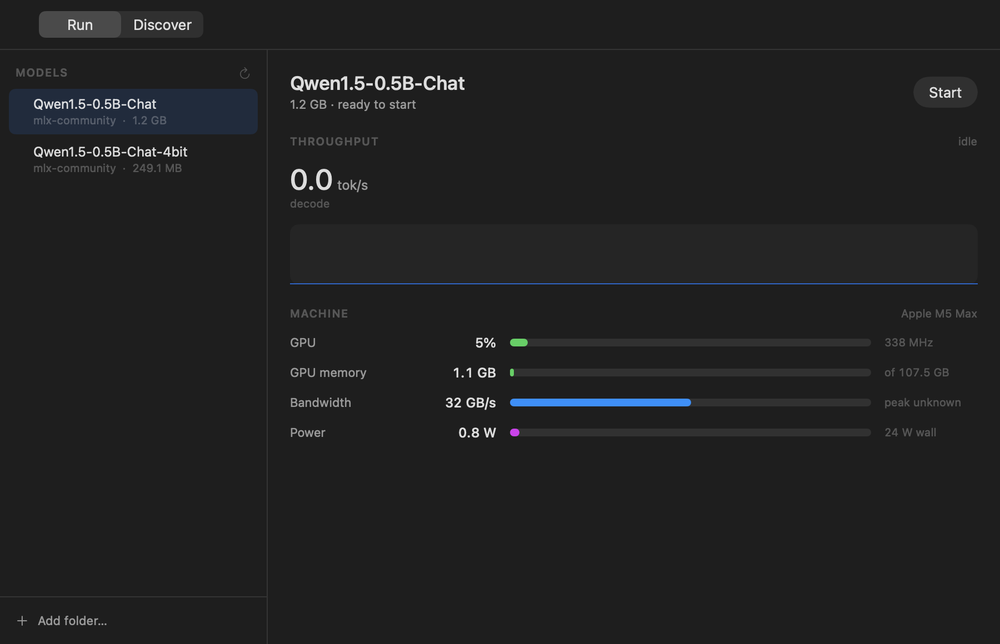
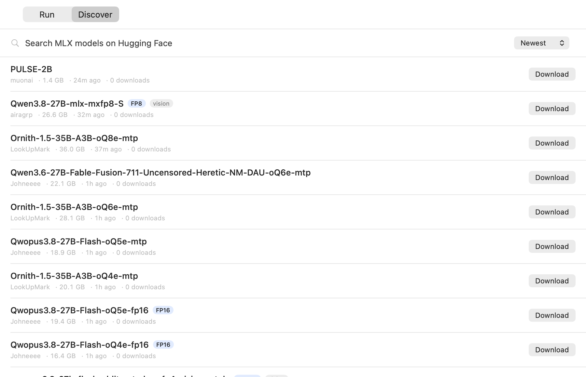
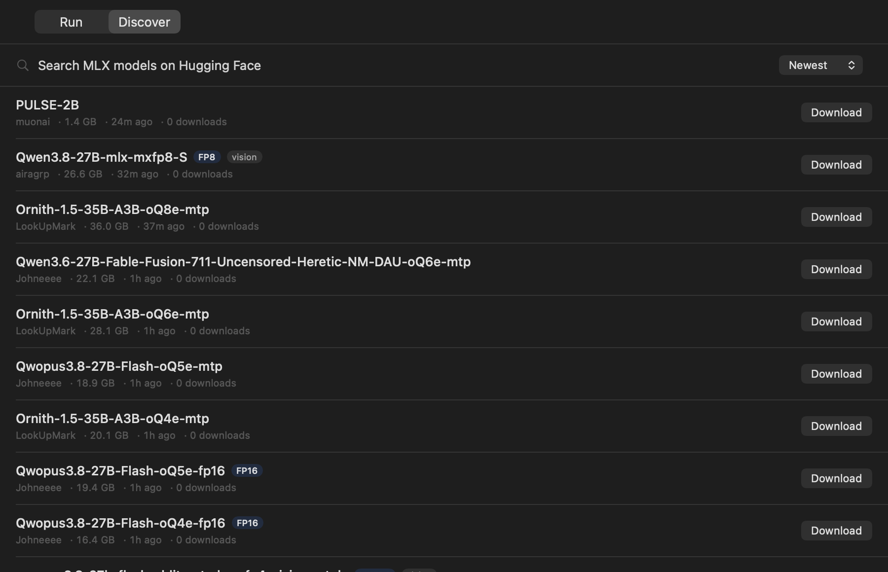
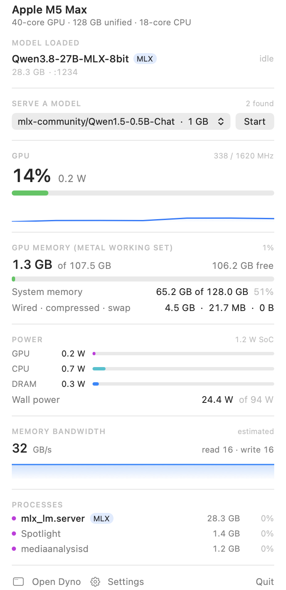
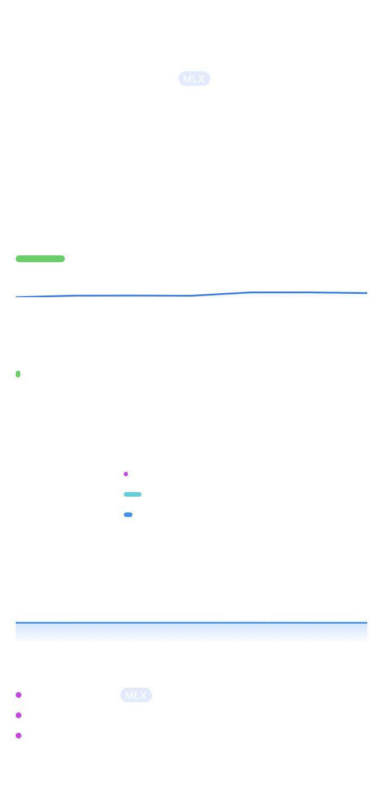

Run local LLMs on your Mac and see exactly how fast they are — tokens per second measured inside the generation loop, next to the GPU, memory and bandwidth numbers that explain it.


Browse MLX models from the Hugging Face hub inside the app — newest first, or by downloads. Size and precision are on every row, and anything too large for your Mac's GPU budget is flagged before you spend the bandwidth.
One click. Files land in the standard Hugging Face cache, so models you already
have from LM Studio or mlx_lm show up without downloading again.
Press Start. You get an OpenAI-compatible endpoint on localhost and a live readout of what it is actually doing. Quit the app and the server stops with it.


Discover — every row shows size and precision, and flags what will not fit before you spend the bandwidth.
Running a large model locally on a Mac is mostly a memory problem, and the tools do not
show you memory the way it matters. There is no nvidia-smi here. Activity
Monitor cannot tell a GPU pinned at a low clock apart from one doing real work, and
reports memory used without reference to the only ceiling that counts — how much unified
memory Metal will let the GPU hold. On a 128 GB machine that is
107.5 GB, not 128.
Throughput has the same problem. Token generation is memory-bound: every token re-reads
the whole weight set, so tokens per second is set by bandwidth, not by GPU
utilisation. llama.cpp and vLLM publish Prometheus metrics so anyone can read their real
throughput. On Apple Silicon the fast path is MLX — and mlx_lm computes
throughput internally on every request, then throws it away.
You can infer it, up to a point. Read bandwidth divided by weight-set size gives the decode rate. On a 27B 8-bit model on an M5 Max that predicted 8.97 tok/s against 8.70 measured — within 3%. But once a second request shared the GPU, the same estimate read ~10.3 against 8.73 actual.
Excellent alone, 18% high under load. Fine for a glance; not something to benchmark against or pick a quantisation level on. So Dyno exposes the number instead of guessing it.
The measurement happens inside the token stream, where it is a fact rather than an
inference. And it is not a fork — Dyno imports mlx_lm.server, swaps two
classes for instrumented subclasses, and hands control back, so batching, prompt caching
and speculative decoding all keep working.
Over Prometheus /metrics and a richer JSON /stats, so your own
dashboards can read it too.
| Metric | Meaning |
|---|---|
mlx:decode_tokens_per_second | In-flight throughput, falling back to recent history when idle |
mlx:last_time_to_first_token_seconds | Prompt processing plus queue wait |
mlx:last_prompt_tokens_per_second | Prefill throughput |
mlx:cached_prompt_tokens_total | Prompt tokens the cache served |
mlx:tokens_generated_total | Cumulative counter |
mlx:requests_active | Generating or queued right now |
mlx:memory_active_bytes | MLX allocator, plus peak and cache |
The decode rate excludes prompt processing and
queue time: tokens produced divided by the time spent producing them. Verified against
wall-clock timing — a request taking 5.46 s end-to-end with 0.36 s to first token
reported 31.2 tok/s, exactly 159 ÷ 5.10.
Machine telemetry comes from IOReport, IOKit and Metal
directly — never sudo, unlike the powermetrics wrappers.


The menu bar panel, for glancing without switching windows.
Python and MLX ship inside the app bundle, the way Ollama carries its own
runtime. There is nothing to pip install and no terminal involved.
$ git clone https://github.com/canivel/mlx-dyno $ cd mlx-dyno/app && ./build.sh $ cp -r build/Dyno.app /Applications/ # ~390 MB self-contained bundle, builds in about 12 seconds
Building needs Xcode's Swift toolchain and uv, which supplies the bundled Python. The finished app needs neither.
The command line also stands alone, for scripting or a headless box:
$ uv tool install 'mlx-dyno[serve]' $ dyno pull mlx-community/Qwen3-8B-4bit $ dyno serve --model mlx-community/Qwen3-8B-4bit --port 8971 $ dyno top # GPU, power and memory dashboard